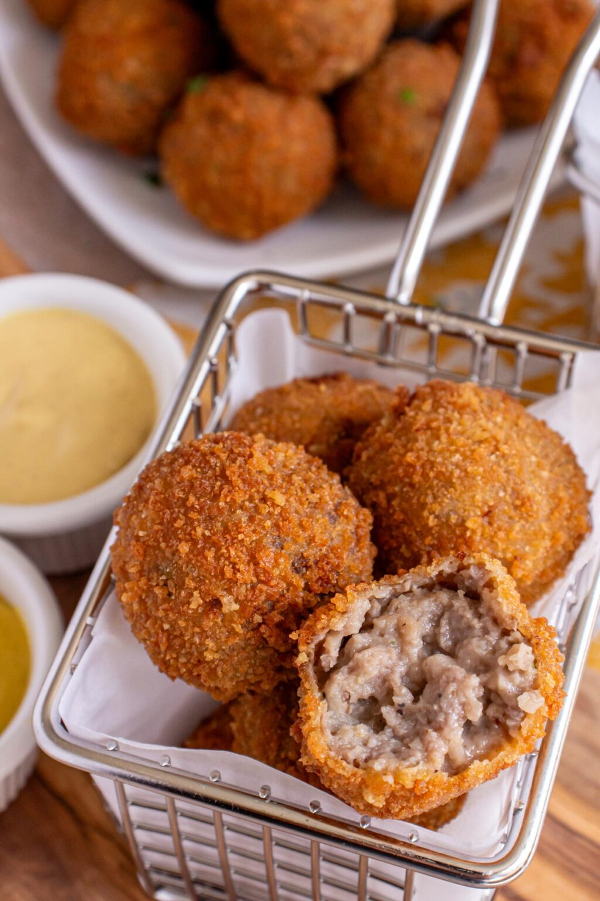

Croquettes

Description
This is my Oma's recipe. She immigrated from the Netherlands, and a lot of the food I had growing up was dutch. Croquettes (or these ones are technically bitterballen) were one of my absolute favourites.
Mum used to eat leftover croquettes on toast the next day.
Ingredients
- 340g mince
- 30g butter
- 30g flour
- 3/4 C stock
- 1 T fresh parsley, finely chopped
- 1 t fresh lemon rind, zested
- Salt to taste
- Breadcrumbs or cornflake crumbs
Directions
- Make a veloute from the butter, flour, and stock.
- Add the mince and seasonings and cook until the mince is no longer raw.
- Put the mixture on a plate, cover with cling film, and place in the fridge overnight.
- Roll the mixture into balls and dip in a flour/water mix before rolling in crumbs.
- Deep fry until golden brown.
Back to Recipe List